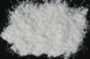

|
|
(For further information on spectroscopy, see:
http://speclab.cr.usgs.gov)
TITLE: Muscovite HS146 DESCRIPT
DOCUMENTATION_FORMAT: MINERAL
SAMPLE_ID: HS146
MINERAL_TYPE: Phyllosilicate
MINERAL: Muscovite (Mica group)
FORMULA: KAl2Si3O10(OH)2
FORMULA_HTML: KAl2Si3O10(OH)2
COLLECTION_LOCALITY: Fremont County, Colorado
ORIGINAL_DONOR: Hunt and Salisbury Collection
CURRENT_SAMPLE_LOCATION: USGS Denver Spectroscopy Laboratory
ULTIMATE_SAMPLE_LOCATION: USGS Denver Spectroscopy Laboratory
SAMPLE_DESCRIPTION:
"P-14 Muscovite 146B--Fremont Co., Colorado. K2Al4(Si6Al2O20)(OH,F)4: Muscovite is one of the most common micas, occurring in acidic rocks, granitic pegmatites, schists etc. It frequently contains small amounts of ferrous and ferric iron, magnesium, manganese, chromium, calcium, sodium, lithium, vanadium and titanium. This spectrum is essentially identical with that of muscovite 24B (see Part I, p. 294, spectrum S-12). The weak broad band near 0.9µ, the very weak sharp feature near 0.44µ and the fall off to the blue are due to a small amount of ferrous iron substituting for aluminum. The near infrared bands due to the hydroxyl ion are essentially identical with those in the lepidolite spectrum, and the explanation is the same."
Sieve interval 74 - 250µm.
Hunt, G.R., J.W. Salisbury, and C.J. Lenhoff, 1973, Visible and near-infrared spectra of minerals and rocks: VI. Additional silicates. Modern Geology, v. 4, p. 85-106.
IMAGE_OF_SAMPLE:

END_SAMPLE_DESCRIPTION.
XRD_ANALYSIS:
Muscovite - pure. (Norma Vergo)
END_XRD_ANALYSIS.
COMPOSITIONAL_ANALYSIS_TYPE: None # XRF, EM(WDS), ICP(Trace), WChem
COMPOSITION_TRACE: None
COMPOSITION_DISCUSSION:
None
END_COMPOSITION_DISCUSSION.
MICROSCOPIC_EXAMINATION:
Not done yet
END_MICROSCOPIC_EXAMINATION.
SPECTROSCOPIC_DISCUSSION:
END_SPECTROSCOPIC_DISCUSSION.
SPECTRAL_PURITY: 1a2a3a4a # 1= 0.2-3, 2= 1.5-6, 3= 6-25, 4= 20-150 microns
| LIB_SPECTRA_HED: | where | Wave Range | Av_Rs_Pwr | Comment |
|---|---|---|---|---|
| LIB_SPECTRA: | splib04a r 3364 | 0.2-3.0µm | 200 | g.s.= |
| LIB_SPECTRA: | splib05a r 4805 | 0.2-3.0µm | 200 | g.s.= |
| LIB_SPECTRA: | splib06a r 15457 | g.s.= | ||
| LIB_SPECTRA: | splib06a r 15469 | g.s.= |
{kind=link}